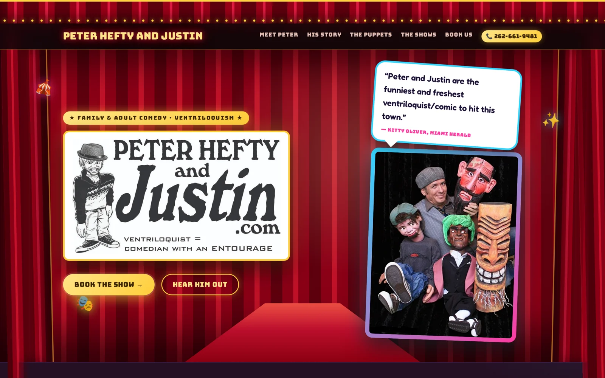

Get found. Get booked. Get paid.
Restaurants, shops, service pros and online stores that need to look legit on the first tap and convert on the second. Fast pages, real SEO, a checkout that works.
- Business sites
- Online stores
- Redesigns
- Local SEO
BANANAbyte is a web design studio in Orlando, building fast, clean, custom sites for the people who keep this city interesting — the taco spot, the boutique, the online store, the comedian, the DJ, the ventriloquist. One flat price, and it’s yours.
Orlando, FL replies within 1 business day you own everything
One flat price, quoted before day one. No hourly meter. When it ships, you own all of it — code, domain, content — in English or Spanish.
There’s a person behind the studio. Meet Gabe
Businesses need to be found. Performers need to be felt. Both need a site that doesn’t look like a template — so BANANAbyte builds both. No “business mode” and “showbiz mode.” One studio with range.
Restaurants, shops, service pros and online stores that need to look legit on the first tap and convert on the second. Fast pages, real SEO, a checkout that works.
Comedians, DJs, musicians and ventriloquists who need a show site with personality, a tour list that updates itself, and a “book me” button that actually gets clicked.
From business sites and online stores to performer show sites, redesigns, and local SEO — here are the highlights.
Custom, mobile-first sites for shops, restaurants, service pros and performers alike — built to be found and built to book the sale or the gig.
Sell goods, merch or tickets without the platform tax eating your margins. Product pages, carts, and a checkout that just works on every phone.
A site that loads like 2009, or a form that’s broken? Keep what works, fix what doesn’t, and make it modern, fast, and yours again.
Optional: a booking helper so you’re not answering the same FAQ at midnight — built and watched by me, so a real person is still behind it.
Updates, backups, edits and a real human watching over it — your site stays fast, safe and current without you ever touching the code.
Show up when your neighbors search — Google Business Profile, reviews and on-page SEO so the right local customers actually find you.
The studio’s first live client site (an award-winning ventriloquist), shown alongside a store concept and a show concept — one from each world. The real one is badged; the rest are honestly labelled concepts.

An award-winning ventriloquist & comedian’s live booking site — built by BANANAbyte.
Visit the live siteA concept build: a warm, retro candle & coffee shop with a product grid, cart and subscriptions.
View demoA concept build: a stand-up comedian’s site with tour dates, video clips and a booking button that actually gets clicked.
View demoStorefront or stage, you work with a studio small enough to answer your email the same day and careful enough to sweat the details. The work is taken dead seriously; the process, not so much. Nothing gets lost in a handoff, because there is no handoff.
Bilingual, local, and honest about scope — BANANAbyte would rather build one site it’s proud of than crank out ten it isn’t.
Meet the person behind itA full custom site for a local business lands in the range below, with a leaner Landing tier under it and online stores above. You see the full figure upfront — then it never moves.
A few sentences is plenty. Every message is read by a real person and answered within one business day — even if the answer is “you don’t need us yet.”
Gabe is awesome to work with — creative, just like a magician working his magic on the internet. There was nothing up his sleeve: everything fantastic just appeared before my eyes — my new website.
We talk through what you do and who you’re for, then lock one flat price — no surprises after.
I design and code the whole thing myself, sending real progress you can click, not mockups in an email.
It goes live, and the code, domain and content are all yours to keep — nothing held hostage.